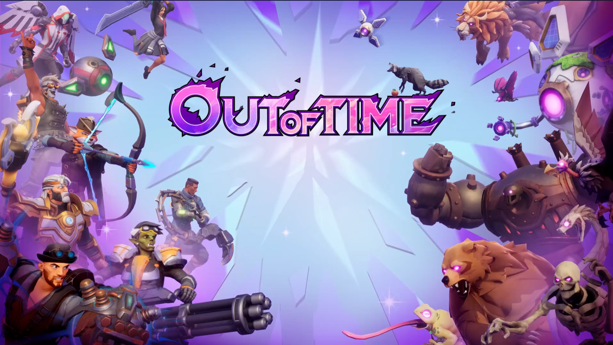
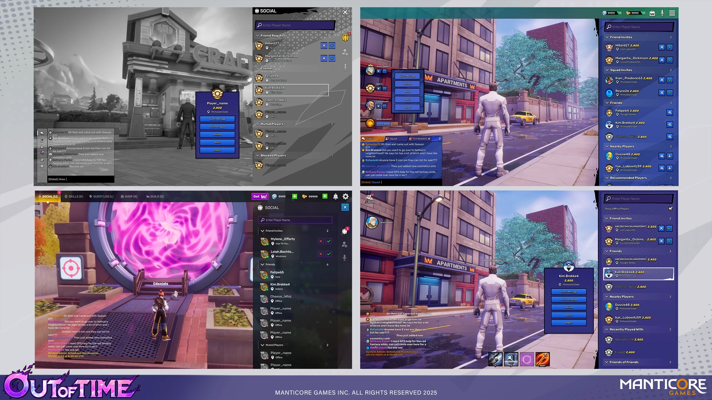
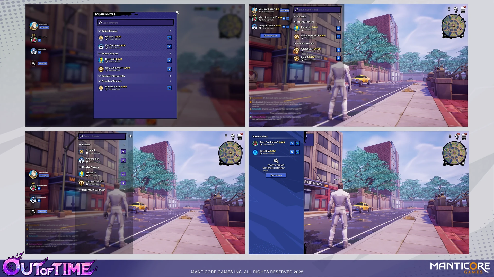
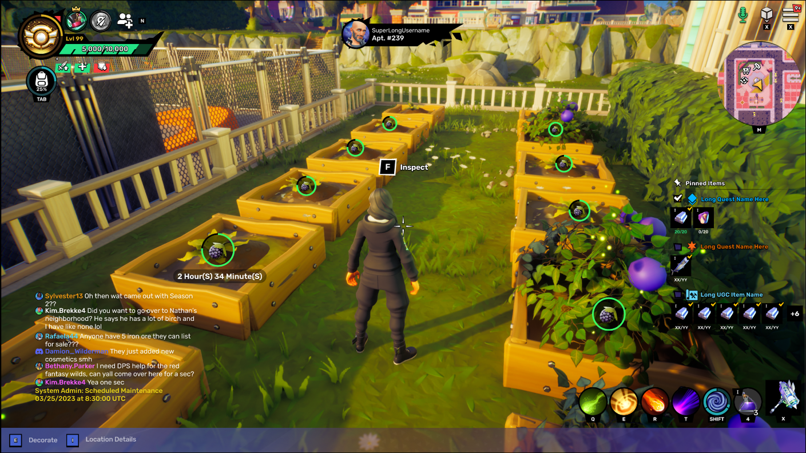
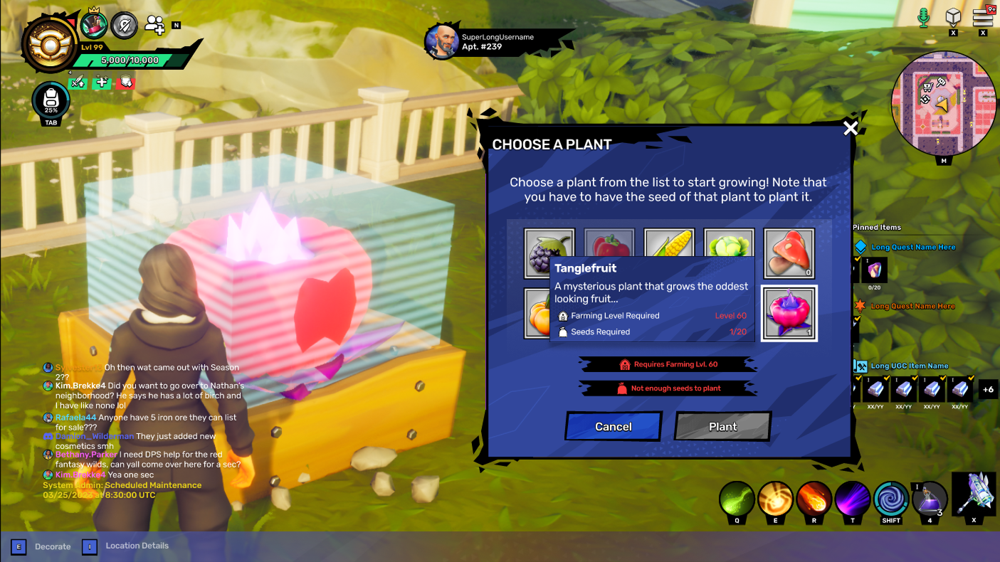
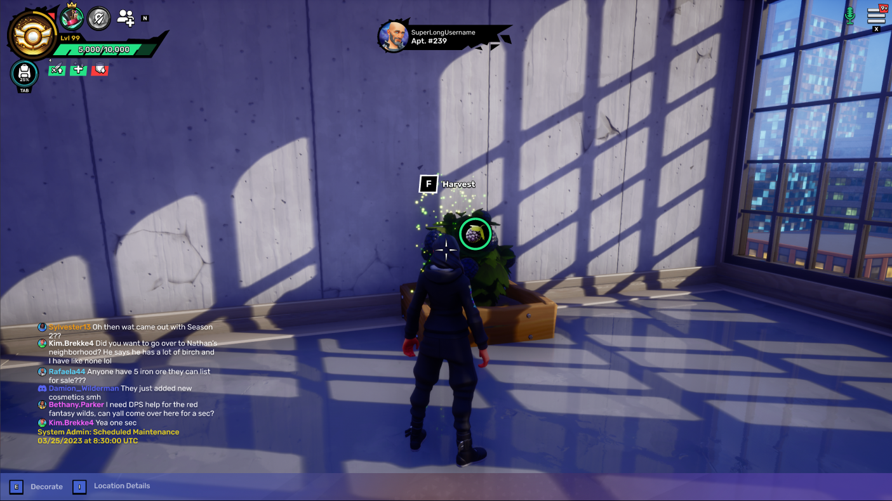
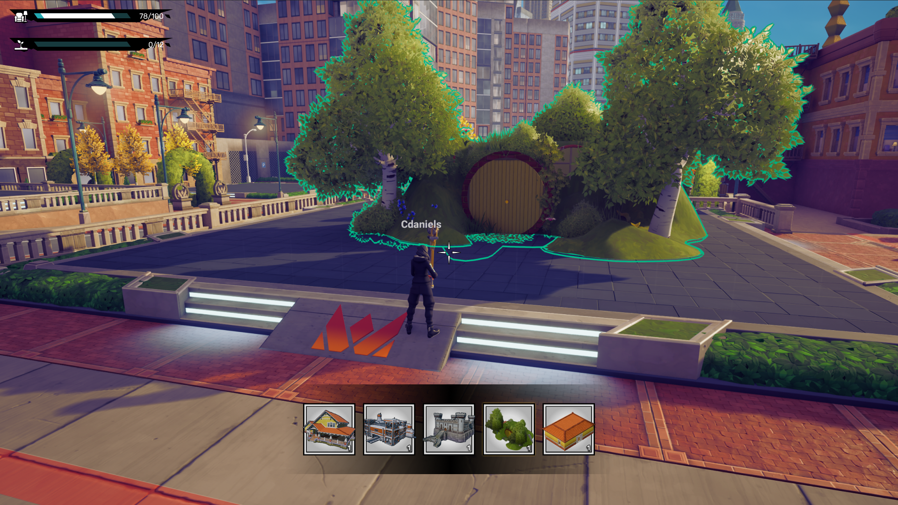
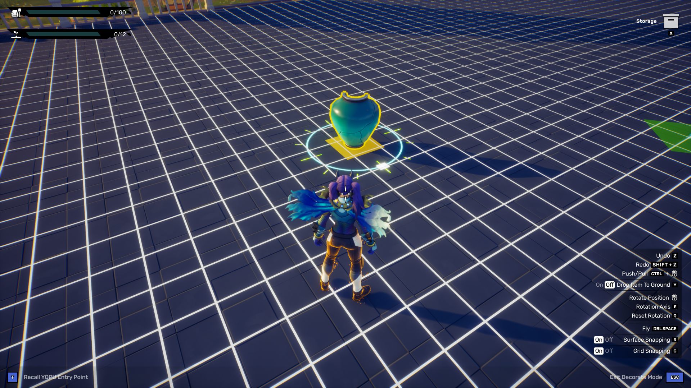

Joining Manticore Games in 2021, I spent over four years as a Senior, then Principal, UI/UX Designer, moving from high-level conceptual wireframing to full-stack UMG implementation. I navigated the project’s evolution through several complex genres—including an MMO, a user generated content editor, and a Lifestyle Simulator—culminating in the successful launch of Out of Time, a third-person co-op roguelike with an 72% positive Steam rating. This breadth of requirements allowed me to architect diverse UI systems, and by 2025, I transitioned into a more technical rollout role, refining my Unreal Engine skills through deep-level feature implementation and performance optimization.

- Role: UX/UI and Technical Designer
- Timeframe: October 2021 – February 2026
Squad and Social Features
I worked with the product team on wireframes and design iterations for our squad and social UI, a core pillar of Out of Time's user experience. I led the pipeline from initial Figma wireframing to full Unreal implementation, leveraging Common UI to ensure seamless cross-platform controller support. To reduce redunacy and optimize workflow, I created modular player tiles designed for use across both Squad and Social panels that could have various states and buttons activated on them when needed. Beyond visual layout, I collaborated with UI Engineering to bridge the front-end with the back-end, implementing Model Viewer View Models (MVVM), data binding, and animation logic in UMG to deliver a high-performance, responsive system.
Research
To minimize player friction and leverage existing mental models, I performed a competitive analysis of market leaders like Fortnite, Warframe, and New World to inform our information heirarchy and general layout. This research informed our move toward a modular, tile-based architecture, designed specifically for scalability. This ensured that player actions could be expanded over time without cluttering the UI, while maintaining visual consistency across the Squad and Social panels.
Social Panel Iterations
Because the main gameplay loop relies on co-op gameplay, the Social and Squad panels serve as the primary key for player retention. When looking at the social panel, the information hierarchy was designed to deliver information across a few channels:
- • Incoming requests and existing friends were postitioned at the top of the panel to expedite potential squad formation
- • A 'Nearby Players' view was created to help users quickly identify potential teammates within their immediate vicinity
- • A 'Recent Players' list was also integrated to capitalize on positive gameplay interactions, allowing users to easily re-connect with high-performing teammates from previous sessions. Since our queuing system could pop you into a run with anyone, we wanted you to be able to see who it was that did 12k damage as a tank/healer in that last run!

Squad Panel Iterations
The design of the Squad Panel required a rigorous evaluation of a context-aware layout: a squad state widget that remained visible for low-friction updates and in-game squad feedback, and a full-screen 'Squad Social' panel for high-complexity interactions when forming squads in town. While the Social Panel served as a lightweight world-companion, we identified the Squad Panel as an intentional user action requiring a dedicated full screen state. By embracing a full-screen layout, we successfully prioritized complex user actions without compromising the visual clarity of the player's active 'squaded' state.

Farming
One feature that was really a delight to work on was quite small, and it was focused on farming. To drive daily active users (DAU), we implemented a real-time growing cycle that allowed players to generate crafting materials directly from their plots. I developed a modular square-foot planting mechanic, using Core as a prototyping environment. I refined the interaction affordances for planting and harvesting, ensuring the UI-to-World transition felt responsive. The goal was to create a scalable grid system that could handle high-density placement while providing the player with clear, actionable feedback throughout the crop’s lifecycle. This system provided a dual benefit: it reduced the friction of manual resource gathering while creating a consistent, rewarding reason for players to return to the game world daily.



Location Details
To support our world-map expansion, I directed the R&D for our looping video preview system, conducting rigorous performance audits on video formats and capture rates. By achieving a 3MB footprint per asset, I mitigated potential storage and performance issues, which was crucial for a map that would likely have 30+ locations in the future. These standards were later adopted as the studio-wide benchmark for our Ability Preview system as well.
I also owned the UI design for the Location Detail Panel, a highly detailed panel that utilized a stacked hierarchy to display difficulty settings, drop rates, and personal best run times without compromising the visual 'hero shot' of the environment.
Queueing System
I led the design evolution of our Matchmaking and Queueing systems, balancing the technical requirements of squad-synching with the player’s desire for continuous engagement. I moved the project from a modal-locked queueing experience to a global HUD overlay, ensuring that 'Time-in-Queue' and squad-state remained visible regardless of the current menu depth. This required a rigorous breakdown of UI priority and state management to ensure that the persistent queue widget never interfered with deeper sub-menus, while still providing a clear path to the 'Game Confirmed' interaction.
Plot Decorating
I played a core role in architecting how player's could bring their decorations onto their own plots. The primary challenge was balancing a high-density control panel (mouse/keyboard) with the need for an unobstructed creative field-of-view. I implemented a didactic UI framework that utilized clear visual affordances—such as contextual selection states, collision warnings, and cursor-linked manipulation widgets—to provide real-time feedback. I led a series of competitive case studies on titles like Animal Crossing and Palia to ensure that critical keyboard shortcuts remained accessible without encroaching on the player's workspace.



User Generated Content (UGC) Editor
One of my most significant long-term initiatives involved architecting a User-Generated Content (UGC) editor. My challenge was to create a friction-less creative suite that balanced high-fidelity customization with a complex in-game economy.
- • I designed wireframes and high fidelity designs for a persistent 'Cost-to-Publish' system, ensuring that real-time resource and gold expenditures were visible throughout the creative process to prevent user frustration at the final publish.
- • Managing a near-infinite library of assets and 'plans' required a deep dive into user mental models. I spearheaded a three-month research phase using card sorting and tree testing to categorize the catalog.
- • By treating the asset library like a high-performance e-commerce navigation system, I delivered an intuitive search and filtering hierarchy that transformed an overwhelming data set into a manageable, creative toolset.